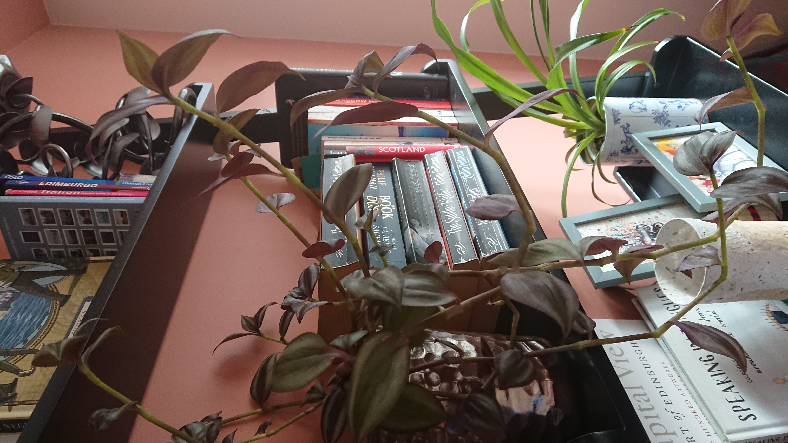

Up close and personal,
This week we spoke to Sam to see how she's getting on in lockdown. We asked for her thoughts on how life would change, for better or worse, in the post-Covid 19 world. This is what she had to say:
I think lockdown has given lots of people time to reflect and think about what they want from life. Certainly for myself, I've been able to enrol on a potentially career-changing course. I hope the sudden enthusiasm for cycling continues too. Really, it's been wonderful having less traffic on the road and I think it was the kick-up-the-backside that our politicians needed to invest in proper cycling infrastructure. It's the way forward.Sam Tovey, 2020 
I do worry about the future though. Working in the tourism sector there is a lot of uncertainty about what our industry might look like in the future. I'm lucky to work for a company that looks after its employees but I think many people will be left unemployed at the end of all this. That's why I want to take this coding course, to future-proof my skills and give me better career prospects for the long-term.
Anyway, for now we just have to take each day as it comes and see what happens. And in the meantime I'll keep looking after my urban jungle!